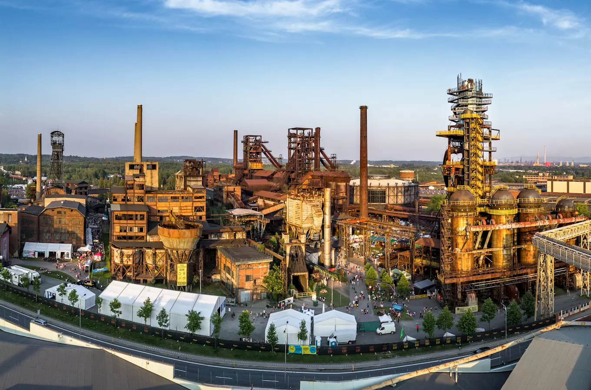
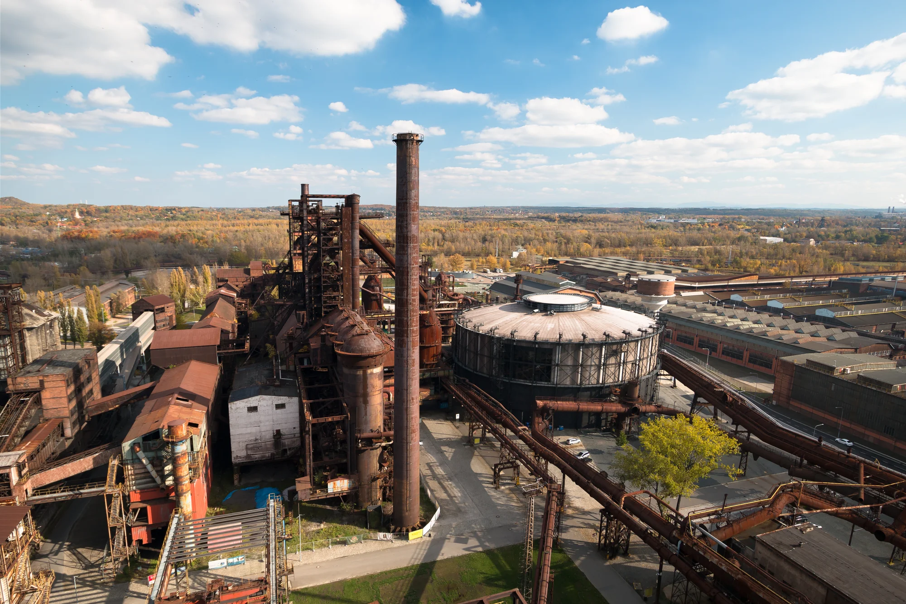
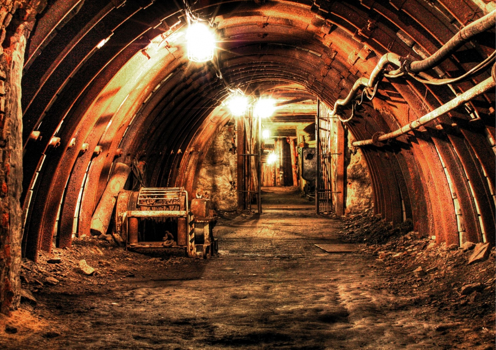
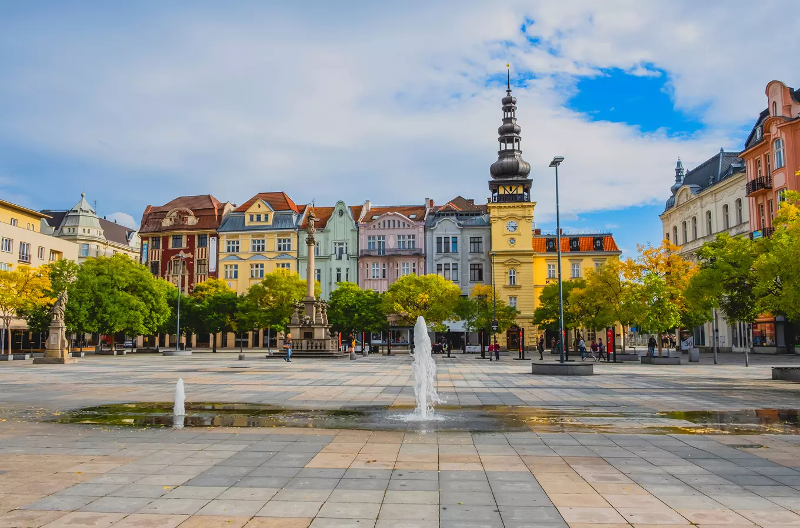

Discover the industrial heritage, culture and unique atmosphere of Czechia's third-largest city.
Ostrava is the third-largest city in Czechia, located in the northeast of the country near the borders with Poland and Slovakia. Once known mainly for coal mining and heavy industry, the city has transformed many of its former industrial sites into cultural, educational and tourist attractions.
Today, Ostrava combines its industrial heritage with music festivals, green spaces and a growing cultural scene. It offers a different perspective on Czechia beyond the country's traditional historic cities.
Moravian-Silesian Region
Czechia
Industrial heritage and culture
Northeasten Czechia
Dolní Vítkovice is one of Ostrava's most famous attractions. This former industrial complex was once used for coal mining and iron production. Today, it has been transformed into a unique cultural and educational area.
Visitors can explore the historic industrial buildings, learn about the city's industrial past and enjoy exhibitions, concerts and other events. The site is a great example of how old industrial spaces can find a new purpose.

Landek Park is a mining museum located in Ostrava. It intoduces visitors to the history of coal mining and the important role that mining played in the development of the city and the surrounding region.
Visitors can discover mining equipment, explore exhibitions and learn about the daily lives of miners. Landek Park offers an interesting insight into Ostrava's industrial heritage.

Masaryk Square is the historic heart of Ostrava's city centre. It is surrounded by buildings, shops and cafés, making it a pleasant place to explore the city's everyday amosphere.
The square offers a different view on Ostrava, combining its historic character with the lively atmosphere of a modern city. Visitors can use it as a starting point for discovering the surrounding streets and attractions.

Approx. 293,000 residents
Approx. 214 km²
23 districts
Odra, Ostravice, Opava and Lučina